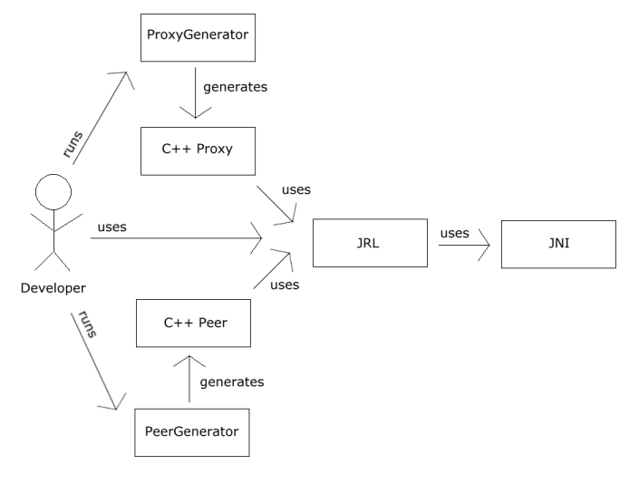

|
Chapter 2
|
|
Introducing Jace
|
Jace is a C++ runtime library consisting of a single shared library named "jace" 1 and a set of Proxy and Peer code-generation tools: ProxyGenerator, BatchGenerator, AutoProxy, PeerEnhancer, and PeerGenerator. In addition to providing some useful utility functions for developers, The Jace Runtime Library (JRL) uses JNI to provide the basic services that the tool-generated Proxies and Peers require to run correctly. The generated Proxy classes allow developers to instantiate and manipulate live Java objects at runtime, just as if they were native C++ classes. The generated Peer classes provide an easy method for developers to implement native methods declared in their Java classes. The following diagram is a high-level overview of the relationships between a developer, the code-generating tools, and the JRL.

1) For example, "jace.lib" on Windows or "libjace.so" on Unix.